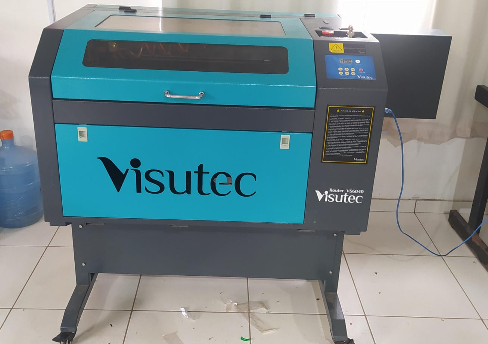
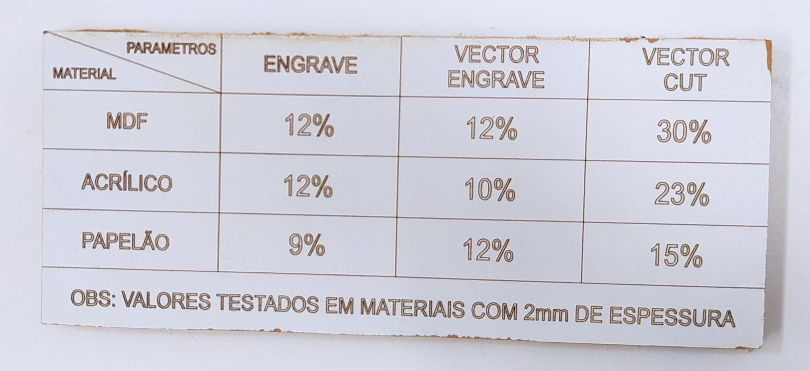
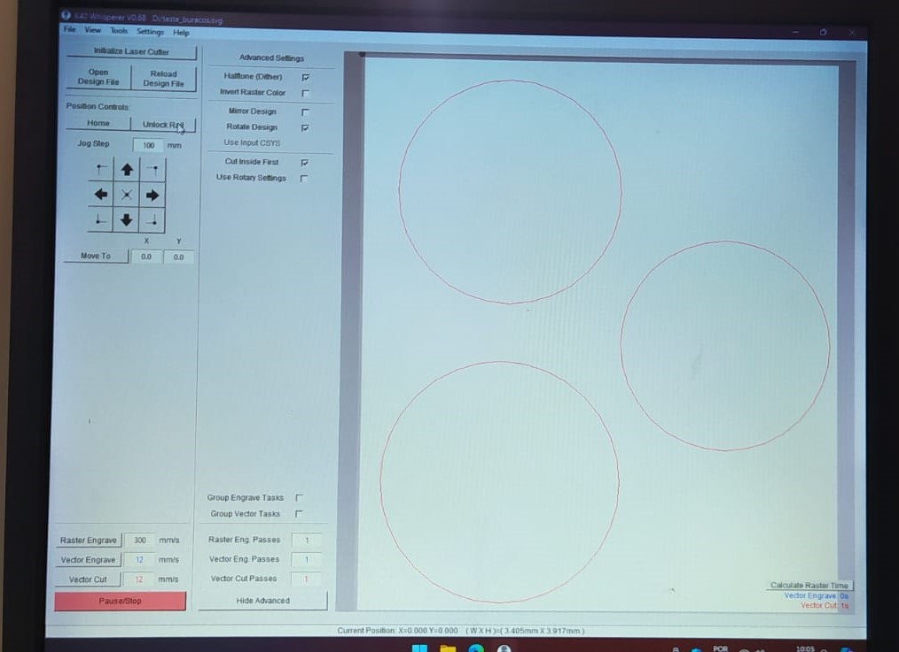
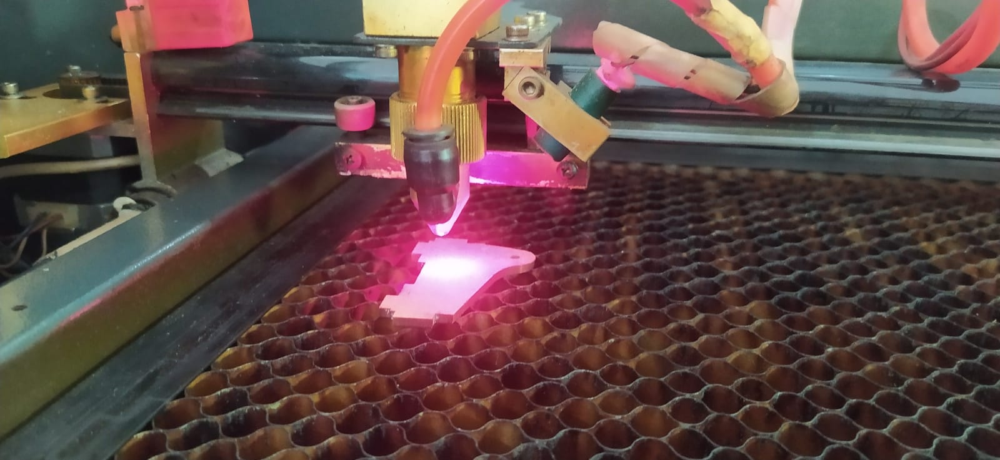
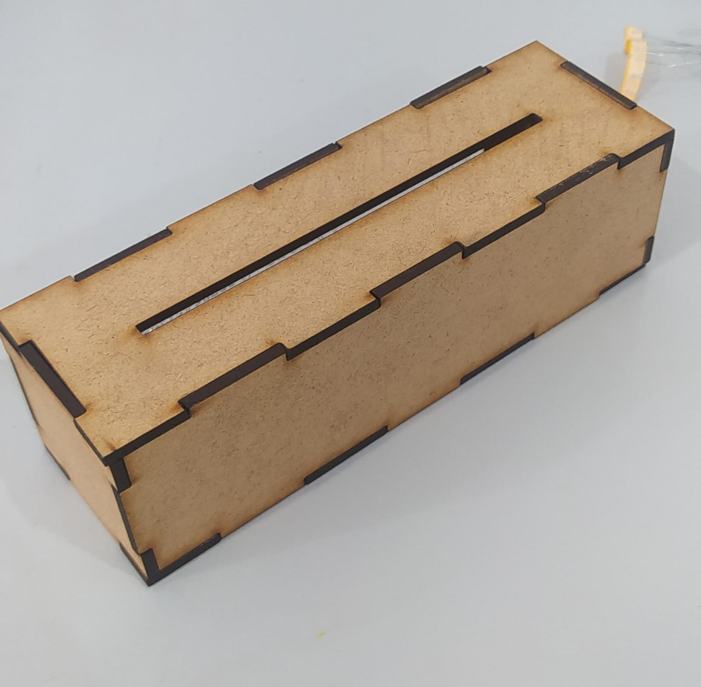

Capítulo 4 Corte a Lazer
4.1 Teoria
Uma máquina de corte a laser opera através de um processo complexo que envolve diversas etapas para cortar, gravar ou marcar uma variedade de materiais. Tudo começa com a geração do feixe laser em um dispositivo especializado, como um tubo de gás CO2 ou uma fonte de estado sólido, onde a energia elétrica é convertida em luz coerente. Esse feixe laser é então amplificado e direcionado para a cabeça de corte através de espelhos e lentes, onde é focalizado em um ponto muito pequeno para garantir cortes precisos.
Com a peça de trabalho posicionada na mesa da máquina, o feixe laser é movido ao longo das coordenadas X, Y e Z, seguindo um caminho específico determinado pelo desenho ou programa fornecido. Quando o feixe atinge a superfície do material, ele é absorvido e convertido em calor, levando o material a temperaturas extremamente altas. Dependendo das propriedades do material e dos parâmetros de corte ajustados, pode ocorrer fusão, vaporização ou ablação do material.
Para garantir resultados precisos e consistentes, vários parâmetros como potência do laser, velocidade de corte e taxa de alimentação são cuidadosamente controlados e ajustados de acordo com o tipo e a espessura do material. Além disso, sistemas de resfriamento, como fluxos de ar ou líquido refrigerante, são utilizados para dissipar o calor gerado durante o processo de corte, enquanto os resíduos são extraídos da área de trabalho para garantir uma operação limpa e segura.
Ao concluir o trajeto de corte conforme o programa, o feixe laser é desligado e a peça de trabalho é removida da máquina. Dependendo da aplicação, podem ser necessários processos adicionais, como limpeza ou acabamento das peças cortadas.
O corte à laser é um dos processos mais versáteis disponível no laboratório FabLab. Trata-se de um método de manufatura subtrativa, no qual um feixe de laser de alta potência é aplicado a um material para remover massa, permitindo cortes precisos ou gravações detalhadas na superfície.
O termo “corte” é reservado para processos em que o laser remove completamente o material, separando-o em duas partes distintas. Por outro lado, a “gravação” refere-se a trabalhos em baixa potência que apenas marcam a superfície do material, sem produzir um relevo significativo. Essa distinção é importante para fins de design e aplicação.
A máquina disposta no Fablab apresenta uma área de trabalho de 60cm por 40cm e potência máxima de corte de 80W. Como ja mencionado, a máquina a Laser do laboratório é de gás CO2, no entanto existem outros tipos de lasers, como diodo, estado sólido, fibra e lasers de outros gases, cada um com suas próprias características e aplicações específicas.
4.2 Tipos de Materiais
Quanto aos materiais, o corte à laser é particularmente eficaz em materiais como madeira e acrílico. Além disso, é possível gravar em uma variedade ainda mais ampla de materiais, incluindo couro, jeans, tecidos não inflamáveis, aço inox e alumínio. No entanto, é crucial observar que materiais derivados de petróleo nunca devem ser trabalhados em máquinas à laser, devido à liberação de vapores tóxicos durante o processo.
O corte à laser representa uma ferramenta poderosa na manufatura moderna, oferecendo precisão, versatilidade e eficiência em uma variedade de aplicações. Com a capacidade de cortar uma ampla gama de materiais e realizar gravações detalhadas, é uma tecnologia indispensável em FabLabs e em muitos outros ambientes de fabricação, impulsionando a criatividade e a inovação em todo o mundo.
4.3 Prática
Para a prática de utilização da máquina de corte a laser, foi sugerido o modelo de uma caixa utilizando um projeto do site MakerCase. MakerCase é uma plataforma online que permite aos usuários criar caixas personalizadas ajustando dimensões e outros parâmetros, gerando automaticamente os arquivos necessários para o corte a laser.
O modelo de caixa no MakerCase é uma excelente introdução às técnicas de corte a laser, pois inclui diversas características que demonstram a precisão e versatilidade da máquina. O site permite que você ajuste o tamanho, a espessura do material e o tipo de junta que deseja utilizar, como encaixes de dedo ou entalhes de encaixe simples.
O processo começa com a personalização do modelo no MakerCase. Após definir as dimensões da caixa e as especificações do material, o site gera automaticamente um arquivo no formato svg ou dxf, compatível com a maioria dos softwares de corte a laser. Depois de importar o arquivo para o software de controle da máquina, ajustei as configurações do laser, como potência e velocidade, de acordo com o material utilizado. No meu caso, pode ser utilizado um papelão de 3mm, um material comum e fácil de cortar com precisão. Na figura abaixo, podemos visualizar a tabela de potências de acordo com cada material.

Uma vez que as configurações estão ajustadas, o próximo passo é posicionar a folha de MDF na mesa de corte da máquina, garantindo que esteja fixa para evitar qualquer movimento durante o corte. Em seguida, o software gera o G-Code, que é enviado para a máquina para iniciar o corte.
O corte a laser segue o contorno exato do modelo, criando as peças com bordas limpas e precisas. Após o corte, as peças são removidas da máquina e qualquer resíduo ou chamuscado pode ser limpo com uma lixa fina. Podemos visualizar a interface do software K40 Whisperer utilizado para fazer a comunicação com a máquina.

A peça para o corte pode ser vista na figura abaixo, foi uma peça simples, apenas para verificação e exemplo.

